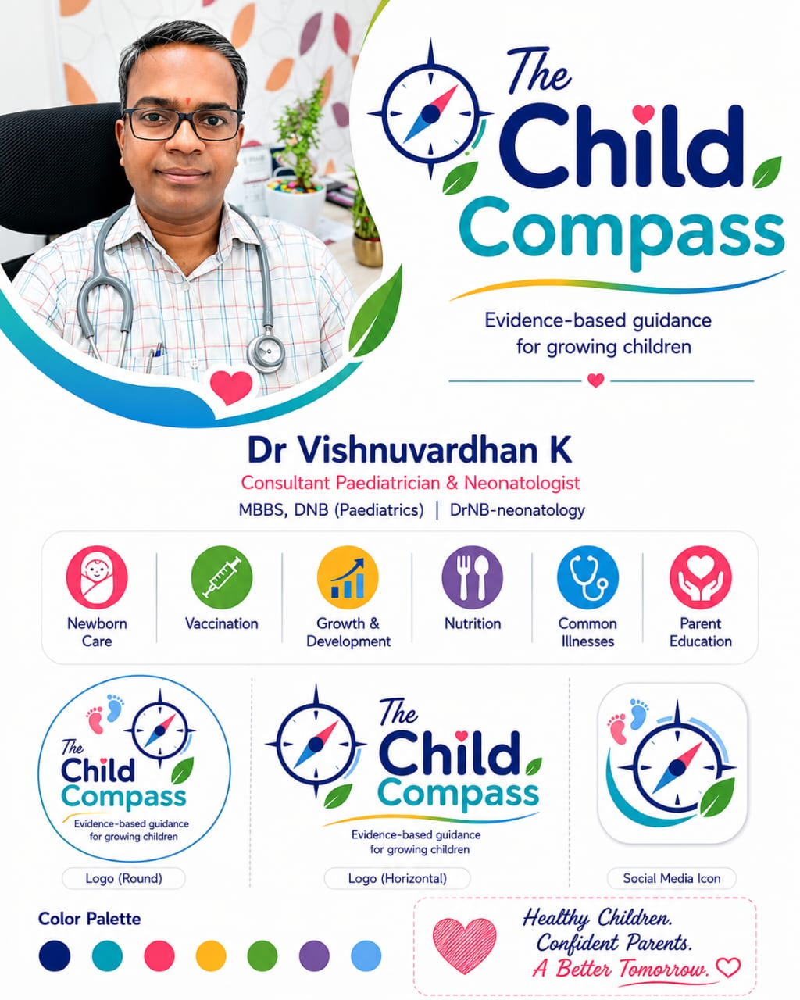

♧
Newborn care
Support for those precious early days, screening decisions and the questions that arrive at 2 a.m.
Start here →Pediatric care, thoughtfully guided
Evidence-based care and simple, useful guidance for every stage of your child’s growing years.
Care that starts with listening.
For newborns, children & the people who love them.
Guidance for
growing together
Care with a compass
From the first days of life through the school years, we help families make sense of what matters most.
Support for those precious early days, screening decisions and the questions that arrive at 2 a.m.
Start here →Clear milestones, timely screening and practical guidance for each new stage.
Explore milestones →Nutrition, prevention and common childhood concerns explained without the overwhelm.
Read the pearls →
Because every little
question matters.
Your child’s guide
At The Child Compass, pediatric care is paired with parent education. We take time to explain the “why”, so you can leave with a plan you understand and confidence to use it.
Parent Pearls
Simple, evidence-informed resources to help you spot what matters and know what to do next.
Resources are for parent education and do not replace a consultation with your child’s clinician.
Development is a journey
Every child develops at their own pace. If something does not feel right, it is always okay to ask. Early support opens doors.
Talk through a concern →Observe your child in everyday moments.
Bring your questions, big or small.
Get clear next steps and timely support.
When to seek urgent care
Seek urgent medical attention for:
Let’s find your next step
Have a question or a concern? Send us a message and our care team can guide you on the next step.